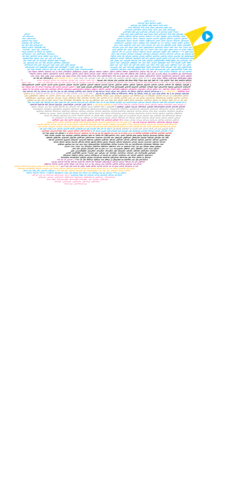

<audio id="bird" src="bird.mp3" preload="auto"></audio>


<script>

  function bird() {
        var audio = document.getElementById("bird");

        if (audio.duration > 0 && !audio.paused) {
            audio.pause();
            audio.currentTime = 0;
        } else {
            audio.play();
        }
    }
</script>


<map name="image-map">
  
  
    <area target="_blank" alt="" title="" href="" onclick="javascript:bird(); return false; " coords="1027,115,912,167,958,230,961,298,965,303,1075,209,1075,163" shape="poly">
</map>

